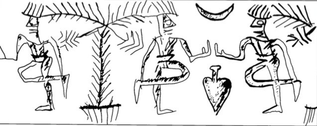
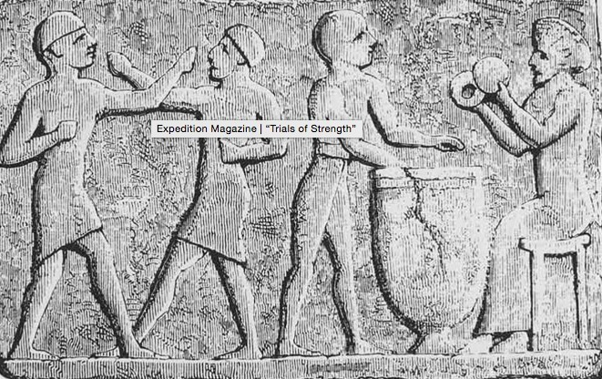

<!DOCTYPE html>
<html class="full" lang="en">
<!-- Make sure the <html> tag is set to the .full CSS class. Change the background image in the full.css file. -->

<head>

    <meta charset="utf-8">
    <meta http-equiv="X-UA-Compatible" content="IE=edge">
    <meta name="viewport" content="width=device-width, initial-scale=1">
    <meta name="description" content="">
    <meta name="author" content="">

    <title>ANE 103: The Role of Music in Ancient Mesopotamia</title>

    <!-- Bootstrap Core CSS -->
    <link href="../css/bootstrap.min.css" rel="stylesheet">

    <!-- Custom CSS -->
    <link href="../css/presentationTemplate.css" rel="stylesheet">

    <!-- NAVMAP CSS -->
    <link href="../css/navmap.css" rel="stylesheet">

    <!-- HTML5 Shim and Respond.js IE8 support of HTML5 elements and media queries -->
    <!-- WARNING: Respond.js doesn't work if you view the page via file:// -->
    <!--[if lt IE 9]>
        <script src="https://oss.maxcdn.com/libs/html5shiv/3.7.0/html5shiv.js"></script>
        <script src="https://oss.maxcdn.com/libs/respond.js/1.4.2/respond.min.js"></script>
    <![endif]-->

</head>

<body>
    <svg id="nav-map" width="250" height="250"></svg>
    <script src="http://d3js.org/d3.v3.min.js"></script>
    <!-- <script src="d3.superformula.min.js"></script> -->
    <script src="../setup.js"></script>
    <script src="../d3.js"></script>

    <!-- Page Content -->
    <div class="container">
        <div class="row">
            <div class="col-md-12 col-sm-12 text-center meghedit">
                <h1>The Role of Music in Ancient Mesopotamia</h1><h2><br><i>by Christian Arndt</i></h2>
		<div class="panel web-presentation-panel megpedit">
		    <br>
		    <i>Drumbrill, 34. A drawing of the inlay on the soundboard of a ceremonial lyre from Ur from around 2700BC. This is one of many examples of art portraying musicians as animals.</i><br><br>
		    <p><h3><strong>Introduction</strong></h3><br>
			Understanding the role of music in a society other than one’s own is a difficult task at best. In the study of ancient Mesopotamian culture, this difficulty is compounded by a lack of direct evidence. Little exists that focuses mainly on the subject of music, and we must therefore rely heavily on references to it in passing (descriptions of events, pictures, carvings, etc.). In addition, the cultural context of music is vastly different today than it was even a century ago, let alone multiple millennia; the near-infinite access to music afforded by the invention of mechanical recordings fundamentally changed the role of music within society, adding yet another barrier in the understanding of the its role in ancient Mesopotamia. And that, exactly, is the topic through which this blog shall venture; how did music function within the culture of ancient Mesopotamia? How did its role then compare to its role now? Within this scope, there are three main facets to explore: music in the everyday, music in ceremony, and music as a display of wealth. After discussing these categories in greater detail, I will conclude by proposing that the differences we observe in the various roles music plays are due mainly to differences in the general availability of music, which directly affects the value placed on music by society.
		    </p><p><h3><strong>The Everyday Song</strong></h3><br>
			<br>
			<i>Kilmer 2609. A drawing by M. Matousová-Rajmová of a cylinder seal impression showing dancers with an instructor using a rhythm device. While this was most likely a group of professional dancers, recreational dancing was common.</i><br><br>
			This is perhaps the broadest category of music, as it encompasses any music used for entertainment and recreation. The modern equivalent is by far the most common use of music today; from Spotify playlists to dance parties and concerts, it’s almost impossible to go outside without witnessing music being used for personal recreation in some form.<br>
			That being said, the methods by which modern music is used for this purpose differ greatly from those of the societies of ancient Mesopotamia in some ways. While there were performances in taverns and at other social celebrations, many musicians played in the nude (Kilmer 2604-5). These musicians often played for people performaning sexual acts, and sometimes even took part while playing.<br>
			<br>
			<i>A relief of a shirtless man playing a lyre from the Oriental Institute in Chicago. Picture from http://ancientlyre.com/</i><br><br>
			As might be expected, music was also closely tied with drinking culture. A famous Hymn to Ninkasi the goddess of beer, contains a brew recipe interwoven with lyrics of worship and reverence (Civil). Another example of music as a part of drinking culture is a drinking song about the predetermination of life by the gods (Student Drinking Song). The lyrics list well-known people who are dead, and then go on to say ‘Life without joy – what advantage has it over death?’ The song makes the argument that life happens either way, so people might as well enjoy it and drink—a theme common to many modern songs of similar style.<br>
			<br>
			<i>A full picture of the Peace panel of the Standard of Ur, displaying celebration with musicians in the upper right corner.<br>Circa 2500 BC, from http://www.britishmuseum.org/explore/highlights/highlight_objects/m e/t/the standard of ur.aspx</i><br><br>
			A final observation about the role of music as everyday entertainment can be extrapolated from “The Story of Wenamun”, an account of the travels of a rather unlucky Egyptian merchant named Wenamun. At one point in the story, Wenamun feels that everything is working against him; he has just managed to strike the deal he needed to make after having his money stolen, when an old enemy arrives in town looking to lock him up. He breaks down and begins crying. Upon hearing this, the town’s prince sends “Tentne, an Egyptian songstress… saying ‘Sing for him! Do not let his heart be anxious.’” This shows that, similar to modern music therapy, music was used as a medium of healing. An interesting side not is that this also shows that people recognized different types of music from different geographical locations—the fact that Tentne’s only identifying characteristic was her Egyptian nationality proves that it carries a certain amount of weight.<br>
			<br>
			<i>A picture of a reconstructed bull-headed lyre in the British Museum, found on their website: http://www.britishmuseum.org/images/ps203447_l.jpg</i><br><br>
			It is reasonable to say, then, that the role of the everyday song in ancient Mesopotamia was quite similar in nature to that of the modern everyday song; however, music was much less readily available, and thus, songs in this era held a different value. Also, the lack of standardized tunings makes it highly unlikely that the modern social culture among musicians (especially in the realm of jazz, blues, rock, and the contemporary) is an accurate parallel to that of ancient Mesopotamia. While Kilmer makes it clear that ensembles and group performances did occur, it is logical to assume that the “jam session” as we know it today would’ve been nearly impossible.
		    </p><p><h3><strong>Ceremonial Music</strong></h3><br>
			<br>
			<i>Drumbrill, 34. A drawing of the inlay on the soundboard of a ceremonial lyre from Ur from around 2700BC, portraying the musicians as animals.</i><br><br>
			The role of ceremonial music has remained relatively unchanged since its first documented occurrences. A modern parallel to draw to this would be any hymn or other piece of music used in some sort or religious or social ceremony. Music has always been an important component of such formalities.<br>
			<br>
			<i>A terra-cotta relief from 2nd millennium Babylon showing a harp player in the Louvre. Picture from www.slate.com/</i><br>
			The picture on the lyre above, and, in fact, the existence of such an instrument at all, proves that music has been deeply connected with religion and belief for as long as humans can remember. Kilmer mentions music within the context of religious ceremony or temples many times throughout her text. As she says, “lists of songs include… hymns of praise, prayers accompanied by gestures, large sacred works, funerary songs, and magical incantations… music… was performed at ominous or dangerous occasions as well: during a lunar eclipse, during childbirth, beside the sickbed, and during mourning rites” (2604). On top of this, the creator and god of water, Enki, is also the god of music (2605). Clearly, music was very important to religious ceremony, and is still a large component of it today.
		    </p><p><h3><strong>Pomp and Circumstance</strong></h3><br>
			<br>
			<i>Kilmer 2610. Another drawing by M. Matousová- Rajmová, this time of a cylinder-seal impression from the Old Babylonian period showing a ritualistic dance.</i><br><br>
			This category of music highlights what is perhaps the greatest difference between the role of music in modern culture and its role in the culture of Ancient Mesopotamia. The most common modern use of music is for common entertainment and recreation; the most prevalent use in ancient Mesopotamia was as a display of wealth and superiority.<br>
			<br>
			<i>A close-up of the top-right corner of the Peace panel of the Standard of Ur, shown earlier; here we see a musician with a lyre and a singer, performing for a feast.</i><br><br>
			There are countless references to this facet of music in many texts about ancient Mesopotamia. Barjamovic discusses the use of musical performance to display wealth and power: “The Northwest Palace was certainly a receptacle of wealth in every manner imaginable… the best musicians and artists… came there to practice their art” (60-61). Kilmer discusses King Shulgi, who boasted about his musical talent to impress others (2602). Possibly due to the greater value placed on music on account of its relative scarcity, it is clear that music was regarded quite highly, and thus it was a great way to display wealth.<br>
			<br>
			<i>Here, we see a pair of men boxing while another pair play percussive instruments—perhaps a highlight of the connection between music and displays of power. Picture from www.penn.museum/sites/</i><br><br>
			Another use of music to display power can be found within groups of laborers and physical workers (such as the military) as a means of controlling, motivating, or legitimizing a group of laborers. Kilmer discusses a trumpet-like instrument being used to direct teams of laborers (2603) and then goes on to mention the fact that musicians often accompanied the military (2604), among other examples. The use of music to display military might and keep people in line is still in place in modern day, as evidenced by the existence of drill teams, drum lines, and military marching bands.<br>
			<br>
			<i>A picture of the headless Statue B. Picture from www.louvre.fr</i><br><br>
			Finally, the importance of songs as a status symbol is evidenced by the text accompanying Statue B, a self-created statue of Gudea which shows him as a seated architect, holding designs for a temple. This text details the proper procedure for handling the statue. In this text, Gudea writes that “He… who deletes my name from the collection of songs (addressed to) me and then puts there his (own) name…” and then goes on a few pages later to list numerous punishments, all of which are both brutal and, eventually, fatal. This territoriality of music again displays the power with which it is associated; committing the act of musical theft is not differentiated from committing the act of claiming that power for oneself.<br>
			It is clear that music was valued in a very different way in ancient Mesopotamia. As stated earlier, the introduction of mechanical recordings into modern culture provides access to far too much music for it to be a status symbol; but at that time, it was one of the greatest.<br>
		    </p><p><h3><strong>Honorable Mentions</strong></h3>
			There are a few other things worth noting in the comparison of the role of music in modern culture and the culture of ancient Mesopotamia.<br>
			<br>
			<i>Dumbrill 33. Musicians playing a giant lyre, from the Temple of Aten at Karnak.</i><br><br>
			First, the differing roles of genders in music. For example, frame drums (one of the earliest percussion instruments) are usually depicted being played by females (Kilmer 2603). On top of this, captives, usually female, were also forced to become vocal performers (2604). While men are not unrepresented among musicians, the fact that gender-specific constraints exist is an interesting facet to Mesopotamian music.<br>
			<br>
			<i>Dumbrill 33. A drawing of a Hittite giant lyre found on a vase.</i><br><br>
			Secondly, one should understand the differences in
			orchestration between ceremonial music and “elite” music, or that which is used to signify power and wealth. It was much more common for percussive instruments to be used in ceremony than stringed; this is most likely due to the quieter nature of stringed instruments (Michalowski 121). Most likely because of this, “secular gatherings were conducted to the sound of string instruments, while percussion dominated the cult” (120). This distinction is arbitrary as far as the role music played within each of these two contexts is concerned, but an important aspect of understanding the role of music in Mesopotamia as a whole.<br>
			Lastly, it is worth discussing the ways in which music moved and was shared from culture to culture. The most notable direct evidence for this is the Ebla texts (Michalowski 117). These texts reference numerous groups of musicians travelling from city to city, including a group of 25 from Mari who travelled west for some time, and also a group of six female musicians from a city called Kish, whose location is somewhat debated. Though it may already seem obvious, this text provides evidence enough to extrapolate that musicians travelled from city to city, bringing their craft with them.<br>
			<br>
			<i>Dumbrill 19. A relief from a wall in the palace of Ashurbanipal, from around the 7th century BC.</i>
		    </p><p><h3><strong>Conclusion</strong></h3><br>
			In conclusion, music in ancient Mesopotamia served many of the same purposes it still does today. The difference lies not in the various roles of music in general, but in the value placed on music, and thus its distribution among those roles. For example, music has always been used as a means of entertainment and recreation, but the ready availability provided by modern technology makes this role of music much more common today than it was previously. By the same token, music has lost much of its value today; before, it was seen as a major status symbol. There were no recordings to listen to, and only the wealthiest could afford the extravagance of live performers. Music was a symbol of opulence in the highest degree. It has always been an important part of culture, but the evolution of society and technology has changed some of the ways in which it functions as such.
		    </p><br><p><h3><strong>Works Cited</strong></h3>
			<pre class="bibliography">
			    <div class="source">Barjamovic, Gojko. “Pride, Pomp and Circumstance: Palace, Court, and Household in Assyria 879-612 BCE.” Royal Courts in Dynastic States and Empires. N.p.: Brill, 2011. 60-61. Print.</div>
			    <div class="source">Civil, Miguel. “Hymn to Ninkasi.” ancient.eu. Ancient History Encyclopedia. 1 March 2011. Web.
				18 November 2015. <http://www.ancient.eu/article/222/>.</div>
			    <div class="source">Dumbrill, Richard J. The Archaeomusicology of the Ancient Near East. Victoria, B.C.: Trafford, 2005. Print.</div>
			    <div class="source">Kilmer, Anne Draffkorn. “Music and Dance in Ancient Western Asia.” Civilizations of the Ancient Near East. By Jack M. Sasson. New York, NY: Scribner, 1995. 2601-13. Print.</div>
			    <div class="source">Michalowski, Piotr. "TRAVELER’S TALES: OBSERVATIONS ON MUSICAL MOBILITY IN MESOPOTAMIA AND BEYOND." ICONEA 2008: Proceedings of the International Conference of Near Eastern Archaeomusicology: Held at the British Museum, December 4, 5 and 6, 2008. By Richard J. Dumbrill and Irving L. Finkel. London: ICONEA Publications, 2010. 117-24. Print.</div>
			    <div class="source">The Student’s Drinking Song, Ancient Lives canvas</div>
			    <div class="source">The Story of Wenamun, Ancient Lives canvas The Text from Statue B, Ancient Lives canvas</div>
			</pre>
		    </p>
		</div>
        </div>
        <!-- /.row -->
    </div>
    <!-- /.container -->

    <!-- jQuery -->
    <script src="../js/jquery.js"></script>

    <!-- Bootstrap Core JavaScript -->
    <script src="../js/bootstrap.min.js"></script>

</body>

</html>
